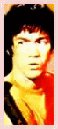
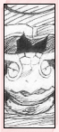

| » References ;
I've noticed a few references to China with Lee. I'm not sure if these were intentional or simply coincidental. However, I will list the ones I caught below, and you can judge for yourself. :3 Bruce Lee This is a very common topic of discussion, that Rock Lee was based off of the legendary Bruce Lee, a kung-fu master from China. Just as a note, in "Bruce Lee," Bruce is the first name, Lee is the surname, while in "Rock Lee," Lee is the first name, whereas Rock is the surname. Other than this, yes, it does look like Lee might have been based off of Bruce Lee. Similarities between Bruce Lee and Rock Lee includes the bowl hair cut, the typical martial arts stance, the speed in moves, and the prominent usage of legs. Both of them worked incredibly hard to achieve their goals, and both are experts at hand-to-hand combat. Is Lee based off of Bruce? There's no hard evidence to say so. We can only speculate at this point. The Tortoise The Tortoise first appears while Lee is dualing Sasuke. Now one might not think much of this, and even Naruto and co. were confused with its presence. However, the tortoise has a significant meaning in China. The Tortoises are capable of living up to thousands of years. It symbolizes wisdom, longitivity, and slow but sure progress. It also symbolizes endurance and strength. The tortoise might not be a completely random idea tossed into the series for fun. It signifies the endurance and strength of Lee, and wisdom of Gai sensei. The tortoise may very well be there to remind Lee that persistance will lead to progress, no matter how long it takes. « reverse |
PRELUDE GENERAL Naruto Terms Chakra LEE First Glance Personality Techniques Fighting Style Transition Weaknesses Analysis RIVALRY vs. Sasuke vs. Neji vs. Gaara vs. Sound vs. Kimimaro RELATIONS Maito Gai Teammates Sakura Naruto EXTRAS Symbolism Seiyuu Quotations References EDEN Reasons Images Wallpapers Fanworks Graphics EPILOGUE Updates Linkage Credits Joined Contact Guestbook |